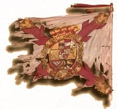
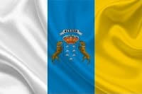
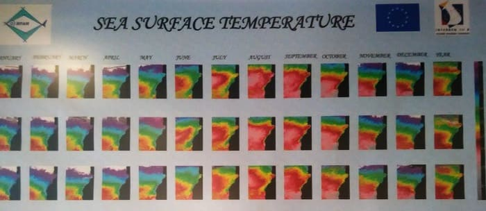

Si pulsas aquí veras el mapa completo de carreteras de la provincia y por zonas al pasar el ratón.

En los origenes, tras la toma de las islas por parte de la corona española se utilizaban estandartes en las que se usaba la "bandera general", que era de colores azul, blanco y amarillo con una cruz colorada, coincidiendo los colores con el de la actual bandera. En aquel entonces pues no era más que la bandera de la cruz de borgoña del general, ya que la bandera española como tal no exisitiría hasta el año 1812, con la primera constitución española. Se puede ver mas en el siguiente enlace. Y esto que sirva como anecdota ya que aparte de las banderas iniciales tras la conquista no se conocerían mas banderas concretas de los territorios hasta ya el siglo XX.
.

La bandera actual es la combinación de las banderas de las dos provincias de Canarias, la de Tenerife (blanco y azul) y la de Gran Canaria (Azul y Amarillo). Puede llevar o no el escudo, siendo simbólico los siete picos como representación de las islas y los dos perros que van en honor al nombre de Canarias ya que es atribuido al can de presa Canario. Sin embargo al ser sólo símbolo de Gran Canarias hay quien tiene rechazo a este escudo.
El terreno es completamente heterogéneo contando con una parte árida y desierta y otra montañosa y mucho más verde.
El este tiene ese matiz árido en parte debido a la erosión causada por el viento que viene del este. Además esta totalmente deforestada por la acción del hombre en estos últimos 500 años ya que al llegar los españoles la isla se convirtió en una fabrica de azúcar, empezándose a cultivar la caña de azúcar por todo el este de la isla. Para realizar estos cultivos se talaron la mayor parte de los arboles y palmeras que se encontraban.
En el interior de la isla existen varias formaciones montañosas, existiendo varios barrancos que en muchos casos dejan calderas, parecidas a las fosas de un volcán. Los más famosos se encuentran en el sur y el este de la isla, estando protegidos. En el centro se encuentran los picos más altos siendo el más alto el Pico de las Nieves, lugar que puede llegar a estar nevado durante algún mes del año. Ya que en el resto de la isla rara vez se baja de los 0 grados.
Al oeste del pico de las Nieves se encuentra el Parque Nacional de Tamadaba y algunas playas naturales alejadas de la presencia de casas u hoteles.
En cuanto a playas resaltar que son varias las playas de la isla que cuentan con el distintivo azul siendo una de las mejores la de Las Canteras, si bien, el agua esta algo más fría que el resto y hasta Abril no empiezan a ser disfrutadas al completo por los habitantes de la capital. Esto es también debido al clima diferente de la capital con el resto de la isla, donde se forman unas nubes que a veces estan durante semanas, ya que se acumulan y no pasan hacia el oeste. Estas nubes son denominadas por los canarios como Panza de Burro.
Al este y sur de la isla la playa más importante es la del Ingles y Maspalomas, existiendo varias playas algo más descuidadas antes del aeropuerto y otras después a forma de calas utilizadas por la red de hoteles que se han ido instalando en esta parte.
A partir del Maspalomas hasta llegar a Mogán, último municipio del sur existen multitud de playas o pequeñas calas, muchas de ellas artificiales y con arena traída de fuera que han hecho crecer el turismo y la población del extranjero, sobre todo de Inglaterra y Alemania, formando a veces colonias de varios miles de habitantes.
El clima de la isla es variopinto existiendo una gran diferencia entre la costa y el interior de la isla. Las estaciones no son tan marcadas como en la península pero la temperatura del agua si que esta influenciada por el mes del año donde nos encontremos.
Aquí dejo una foto de la temperatura del mar dependiendo del mes que estemos:

El norte de la isla que esta cerca del mar tiene una temperatura ligeramente inferior a la del sur, si bien una vez que nos adentramos el tiempo cambia y mucho.
Se puede llegar a apreciar una diferencia de sensación climática de cerca de 20 grados en invierno al movernos dentro si existe viento. La temperatura puede disminuir cerca de 10 grados desde el centro al interior estando a poca altura más. Si nos vamos a las montañas la diferencia se puede apreciar más ya que en el exterior puede llegar a hacer 16 grados y en el interior cerca de 0 grados de mínima, dando el viento una diferencia de hasta el doble dependiendo de la velocidad.
Es muy normal en los meses de Febrero encontrarte en sitios de paso en la isla a gente abrigada y a gente en manga corta debido a la diferencia de clima, pero es que además en la misma ciudad varia la temperatura durante el día dependiendo de las borrascas.
En el sur en cambio el tiempo suele ser estático, no bajando la mínima la mayor parte del año de 20 grados. Por ello, en Gran Canarias siempre es posible buscar el sol porque muy muy raro sera que este cubierto en toda la isla durante más de dos días.
La capital que se encuentra al noroeste de la isla cuenta con un clima especial debido a montañas cercanas que limita el paso de las nubes y hace que se acumulen bolsas de aire frío que pueden dejar sin sol durante días. Es muy peculiar que a veces con solo moverte 10 kilómetros al sur ya no hay ni rastro de nubes y el tiempo sea completamente diferente. Se podría comparar con Londres en cuanto a la borrasca que se queda. Esto es especialmente notorio a finales de febrero hasta finales de Abril, si bien este año, 2018, ha sido tan raro el año que hasta mediados de Junio no se dejo paso al sol por completo.
© 2016 - All Rights Reserved - Diseñada por Sergio López Martínez
![[Valid RSS]](https://www.feedvalidator.org/images/valid-rss-rogers.png "Validate my RSS feed")